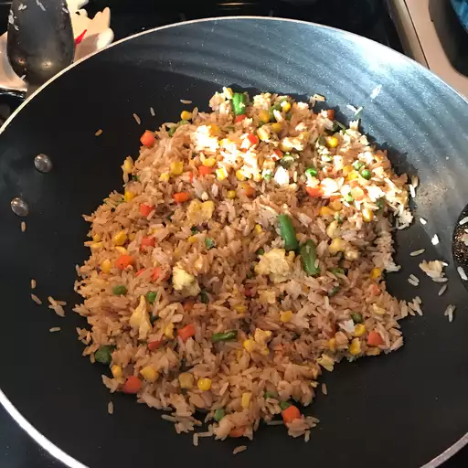

Lasagna Recipe

This is my mom's special homemade lasagna recipe with a meaty, made-from-scratch tomato sauce and a deliciously cheesy filling. A more traditional homemade lasagna filling would be made with ricotta but my mom's recipe calls for a blend of small-curd cottage cheese and Parmesan. I have found none better anywhere. Serve with a leafy green salad and crusty garlic bread.
Garlic Pasta
As far as creamy pasta recipes, this is the best I have ever had. Add prawns and/or scallops to make an amazing seafood Alfredo.
Fried Rice
A quick fried rice recipe like you get at your favorite Chinese restaurant. Leftover rice, plus a couple of eggs, baby carrots, peas, and soy sauce is all you need. Garnish with sliced green onions, if desired. Fried rice is the ultimate family-friendly dish that yields maximum flavor without fuss. Loaded with tender sauteed veggies and delicious bits of scrambled egg, this top-rated recipe makes it easy to recreate a takeout favorite from home in just 20 minutes.